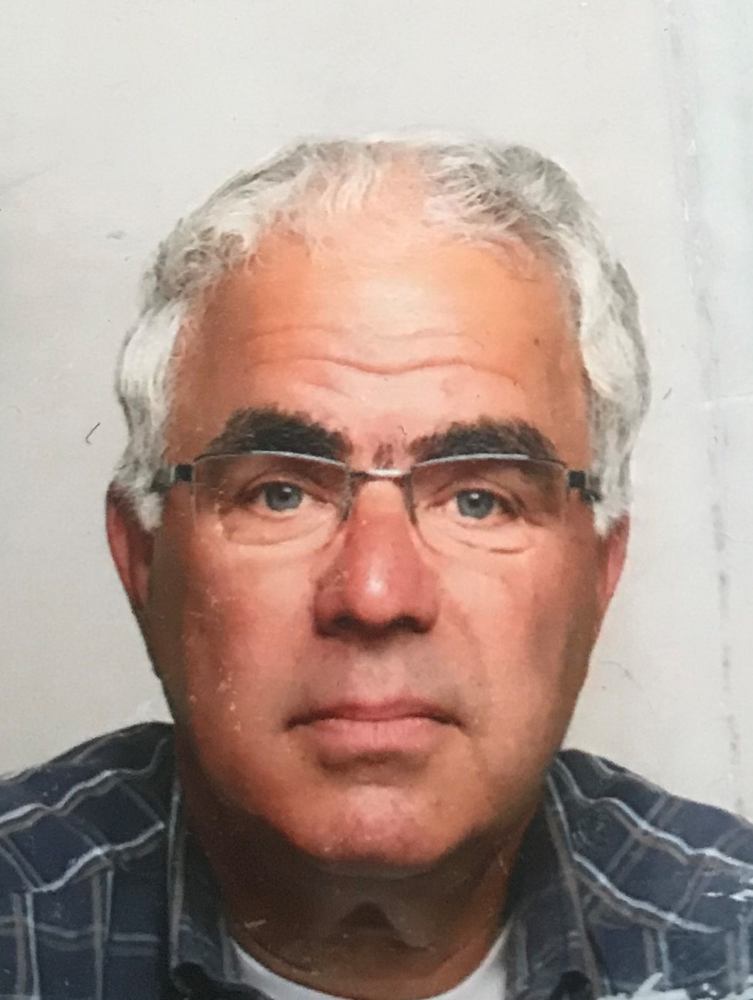
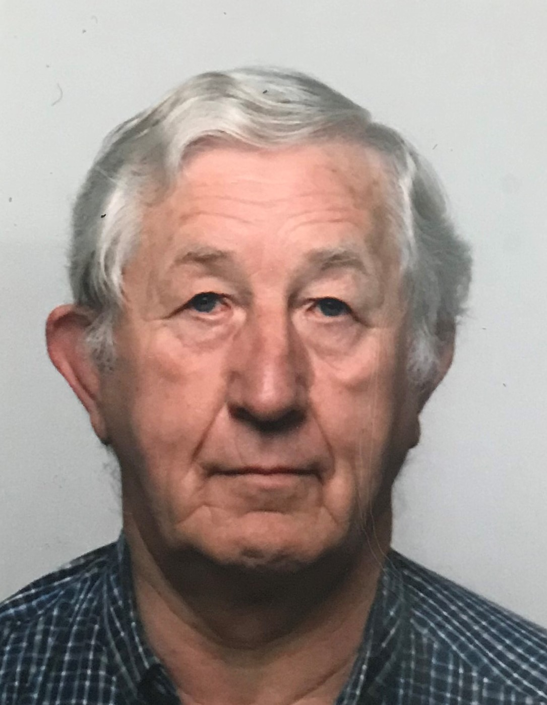
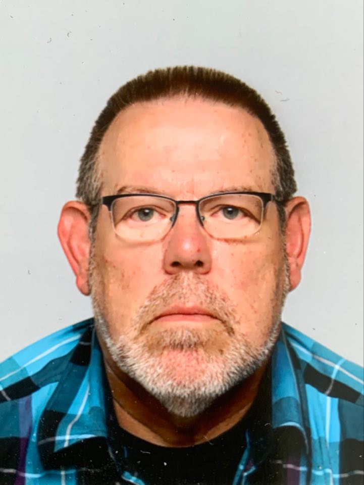
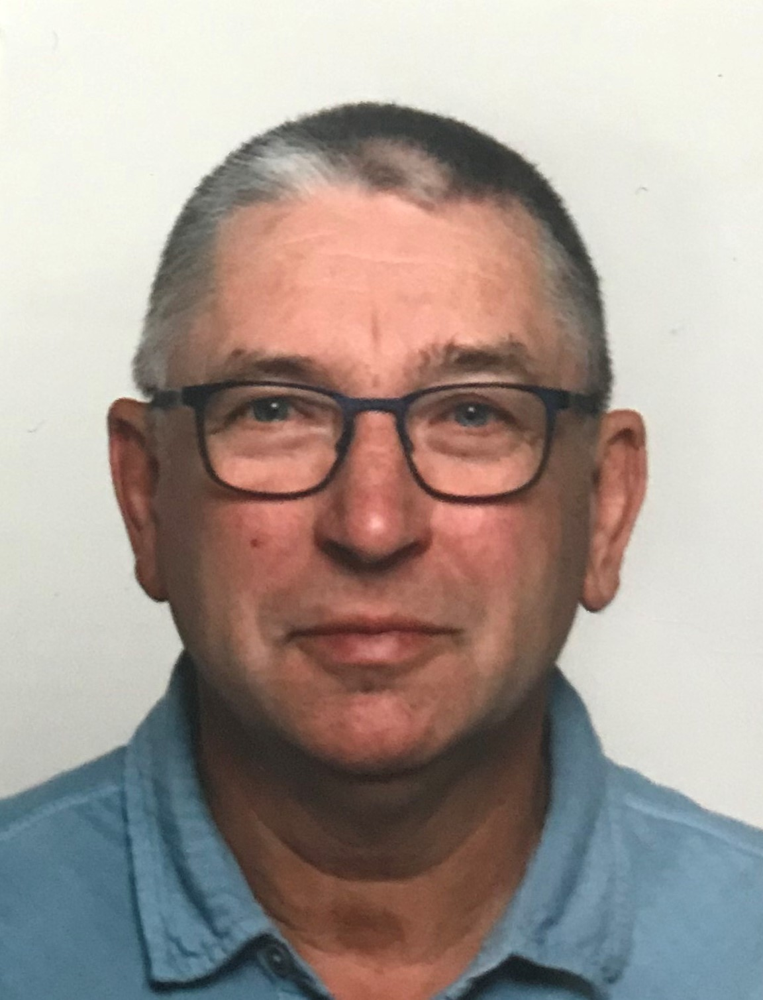
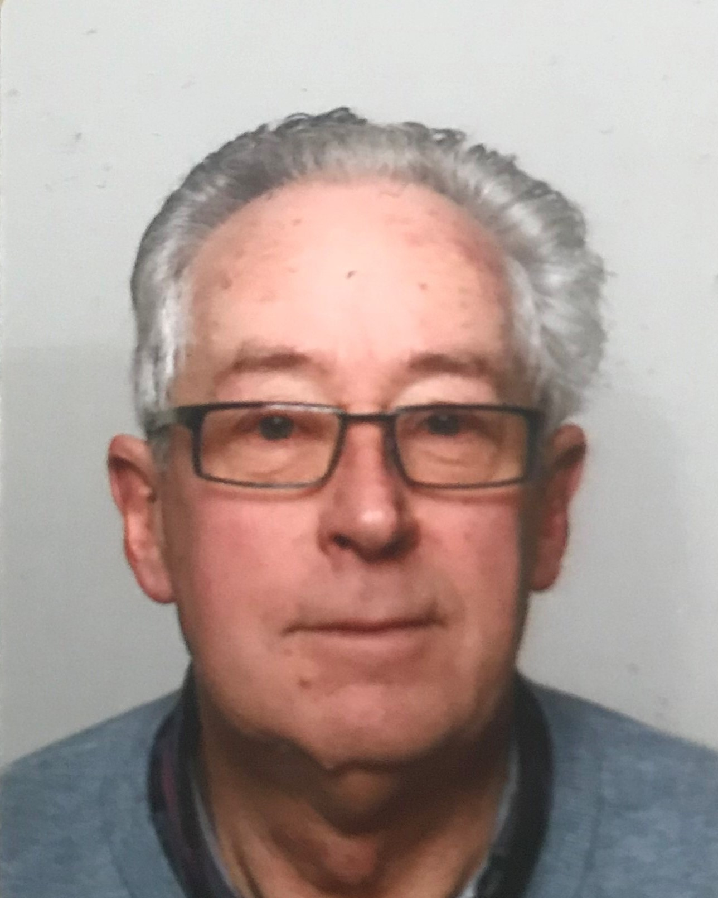

WELKOM OP DE WEBSITE VAN HET DODEWAARDS MANNENKOOR
Het Dodewaards Mannenkoor is een algemeen koor met leden uit Dodewaard en omgeving. Ons koor bestaat sinds 1948 en is een graag geziene gast bij verschillende gelegenheden.
Bij het begin van de vakantie en begin januari worden ook de dames van de leden betrokken bij de activiteit die er dan wordt georganiseerd.De dames en enkele leden van ons koor maken in december ook kerstversieringen welke de leden dan op de markt verkopen.
Het koor treed meerdere keren per jaar op voor verschillende doelgroepen. Mocht u graag eens een avond in de week iets anders willen doen, kom eens vrijblijvend luisteren of meezingen op een oefenavond.
Zangervaring is echt niet nodig dit wordt vanzelf bijgebracht net zoals dit bij de meeste leden is gebeurd.
Welkom en kijk gerust verder op onze website!

NIEUWS EN UPDATES
OCHTEN - Op donderdagavond 20 juni geeft het Dodewaards Mannenkoor een concert in het Huis van Ochten, Dr. M. van Drielplein 2 (dorpshuis). Het koor bestaat uit ongeveer dertig leden uit Dodewaard en omgeving en staat onder leiding van Wim Veerman. Zij zingen geestelijke, klassieke en vlotte nummers. Het concert begint om 19.30 uur. De zaal is vanaf 19.00 uur open, de toegang is gratis. Er staat een bus bij de uitgang voor een vrijwillige bijdrage.
AGENDA
Vakantie van 9 juli tot13 augustus 2020.
Adventsconcert 11 december 2020.
Kerstbakjes maken 16 december 2020.
Kerstconcert 18 december 2020.
Kerstbakjes verkoop 19 december 2020.
Hoge Hof Herveld 19 december 2020.
Uiteraard kan dit alleen doorgaan als de Coronacrisis dit toelaat.
GESCHIEDENIS
Het koor is ontstaan na de Tweede Wereldoorlog, vanuit muziekvereniging Amicitia te Dodewaard.
Omdat door de Duitse bezetter ook muziekinstrumenten waren ingevorderd en muzikanten daarnaast hun instrumenten hadden verborgen kon er geen muziek worden gemaakt. Daarom kwamen enkele mannen op het idee om hun stem als instrument te gaan gebruiken.
Opzet was, om dat mannengezang aan te houden tot het moment, dat men weer over muziekinstrumenten kon beschikken. Dan kon men weer op de “normale manier” muziek gaan maken. Nou dat is even iets anders gelopen, dan men zich had voorgesteld!
Als mannen zingen is tot op de dag van vandaag nog een activiteit waar zo’n 30 mannen zinvol mee bezig zijn. Daarbij verzorgen de heren optredens binnen en buiten Dodewaard. Zijn een graag geziene gast in o.a bejaardenhuizen en kerken. Het typeert het koor dan ook, dat men van alle gezindten thuis is, naast religieuze liederen, zingt men ook Rijnliederen en liefdesliederen.
Het Dodewaards Mannenkoor voldoet in al die jaren aan een duidelijke behoefte. Dat blijkt wel uit het feit, dat er mannen zijn die reeds 57 jaar lid zijn en nog steeds actief mee zingen.
Het koor is in de loop van de jaren uitgegroeid van een mannenkoor tot een zingende herensociëteit, zoals onze oud voorzitter Henk Onderstal het vaak noemt. Dat is ook de kracht. Zingen blijft uiteraard super belangrijk, maar het samen als mannenkoor vertoeven en sociaal samen te zijn speelt een steeds grotere rol. Kende men vroeger het vereenzamen van ouderen minder, tegenwoordig is dat een vaststaand feit. Het Dodewaards Mannenkoor biedt middels haar activiteiten mannen een sociaal ontmoetingspunt aan, waar je ook kan zingen.
Dodewaards mannenkoor. foto genomen tussen 1945 en 1948
BESTUUR
Het bestuur bestaat uit 5 personen.
Voorzitter
Kees van Dijk
Secretaris
Wim Bloemendal
Penningmeester
Jan Heikamp
Bestuurslid
Kees Hoogakker
Bestuurslid
Casper van Doorn
Email: secretarisdmk@outlook.com
Wim Veerman uit Ochten is onze dirigent.
Tijdens het oefenen is hij heel erg gemotiveerd en bevlogen.
FOTO’S
Deelname aan winkel van sinkel

Deelnemers oldtimerrit

Dodewaards Mannenkoor 4-6-2016

Kerststukjes maken

Nieuwjaarsbijeenkomst

Nieuwjaarsreceptie

Optocht bevrijdingsdag 5-05-2015

Optocht bevrijdingsdag 5-05-2015
Verkoop kerstbakjes

Visdag met barbecue

Wat zou er aanzitten

LID WORDEN
Nieuwe leden,
Mannen uit Dodewaard en omstreken!
Kom een keer vrijblijvend kennismaken
Elke donderdag om 19:30 uur in de openbare basisschool de Bellefleur in Dodewaard Marijkelaan 1. Als je het niet kunt zeggen, zing het maar.
Waarom zingen?
Zingen is een sport en zingen in een koor kun je zelfs teamsport noemen. Maar goede resultaten bereik je niet zomaar ...Presteren vraagt om een goede combinatie van houding, ademhaling en techniek. De conditie van de (zang)spieren, tactiek, strategie en spelinzicht. Laat dat allemaal over aan de coach van het koor, de dirigent, dan kunnen wij samen lekker zingen. De mooiste muziekinstrumenten zijn zingende mensen!
Als je gaat zingen heb je jouw instrument altijd bij je. Dat is makkelijk, jouw instrument doet het altijd en je kunt meteen beginnen. Je kunt zonder les gehad te hebben meteen al een aardig nootje zingen. Zingen neemt niet te duiden barrières weg, verzoent en geeft verbroedering. Al zingende vervalt de schroom, komen emoties los, ontstaat begrip en verheldering. Vandaar de uitdrukking als iemand niet uit zijn woorden kan komen: ‘zing het maar’.
Zingen bij het Dodewaards Mannenkoor
- Dat is 1 keer per week trainen en regelmatig een wedstrijd
- De repetities zijn iedere donderdagavond van 19:30 tot 21:30 uur met uitzondering van de schoolvakanties en er is pauze van 20:30 tot 20:45 uur.
- Regelmatig geven wij concerten en zijn er ook diverse optredens in de omgeving, kerstconcerten e.d.
- U mag onze dirigent overtuigen dat u niet kunt zingen, wedden dat u het wel kunt. Noten kunnen lezen is niet noodzakelijk, maar is wel makkelijker.
- Elk jaar houden we een nieuwjaarsbijeenkomst en in de zomer een barbecue samen met onze partners, want het Dodewaards Mannenkoor is meer dan zingen alleen!
SPONSEREN
Sponsoren en donateurs,
Het Dodewaards Mannenkoor kan bijna niet bestaan zonder sponsoring en donaties. Natuurlijk houden wij zelf ook steeds acties om onze verenigingskas aan te vullen, maar dat blijkt vaak niet genoeg om al onze onkosten te bestrijden. Als ons koor u aanspreekt en u wilt ons financieel steunen, dan zijn wij daar erg dankbaar voor.
Als sponsor en donateur ondersteunt u het in stand houden van het koor. Als sponsor krijgt u op onze site een vermelding van het logo van uw bedrijf. Indien gewenst maken wij een link naar uw eigen website.
Heeft u belangstelling om ons op enige manier te ondersteunen, dan kunt u contact opnemen met de penningmeester.